步骤一：双击打开eclipse.exe - 快捷方式
步骤二：点击导航栏【Window】→【New Window】
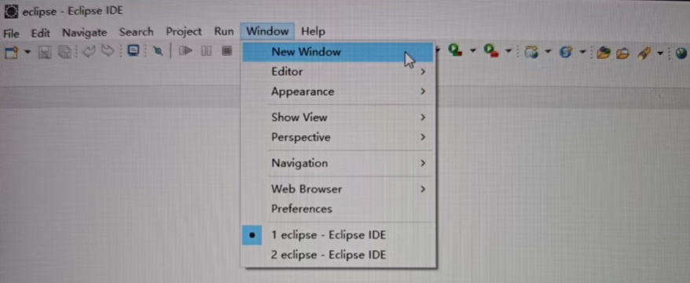
步骤三：关闭旧窗口
步骤四：点击【file】→【New】→【Dynamic Web Project】→输入文件名：javawebtmk → 点击【New Runtime...】→ 点击【Apache】→ 选中【Apache Tomcat v9.0】→ 点击【Finish】→ 点击【Finish】。Javaweb项目就创建好了
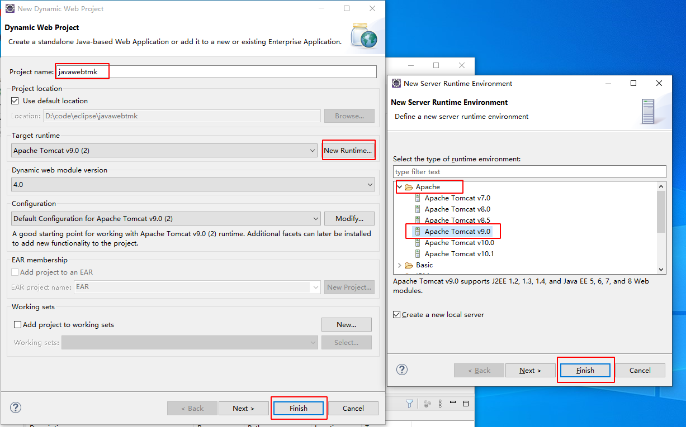
步骤五：选中并展开刚才创建的项目，进入src → main → webapp → 右击文件【webapp】→ 【New】→【JSP File】→ 在File name:处输入文件名Hellowoeld.jsp → 【Finish】 → 输入代码就可以了
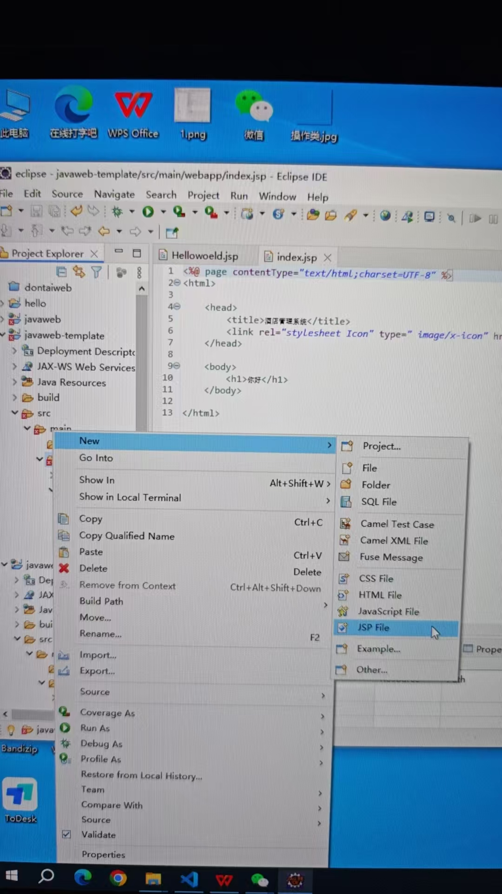
步骤六：点击导航的播放按钮→ 选中Tomcat v9.0 Server at localhost → 点击【Finish】就可以运行了
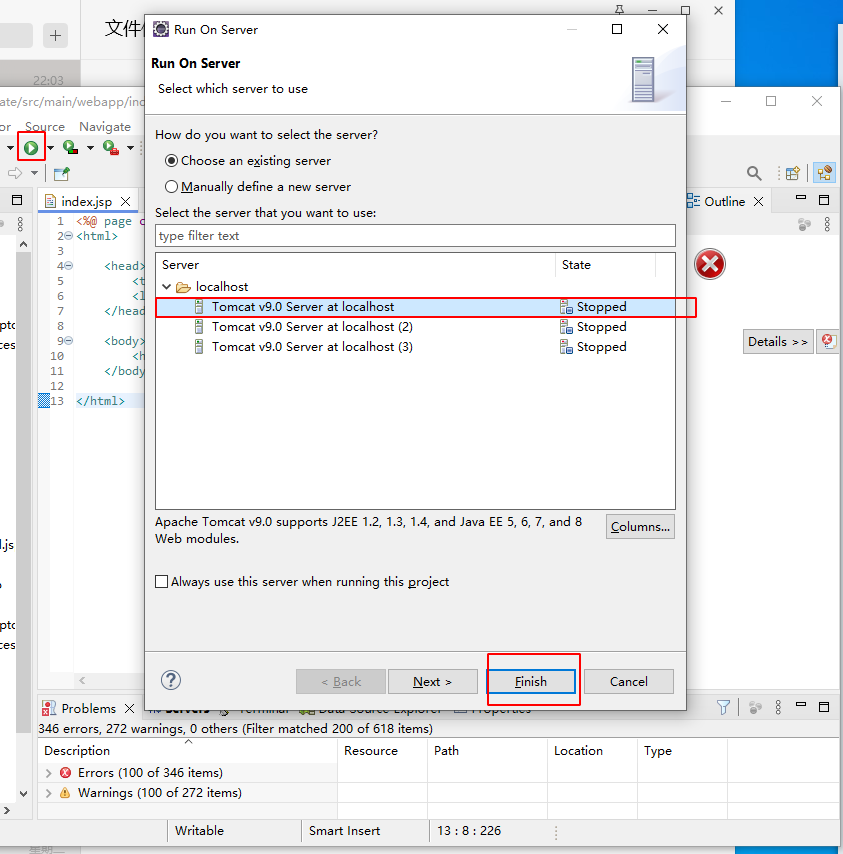
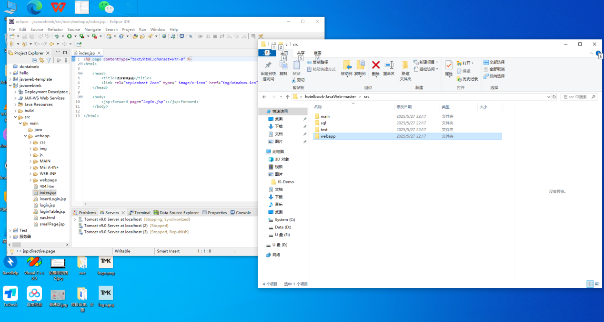
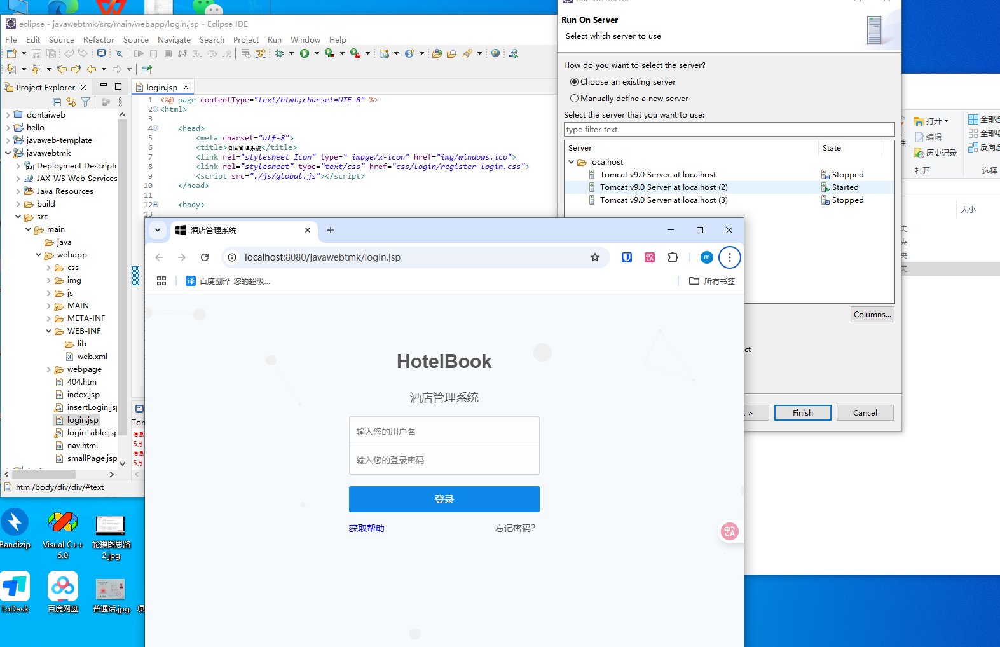
eclipse英化 -nl en
eclipse汉化 -nl zh
如果出现这种情况如何解决
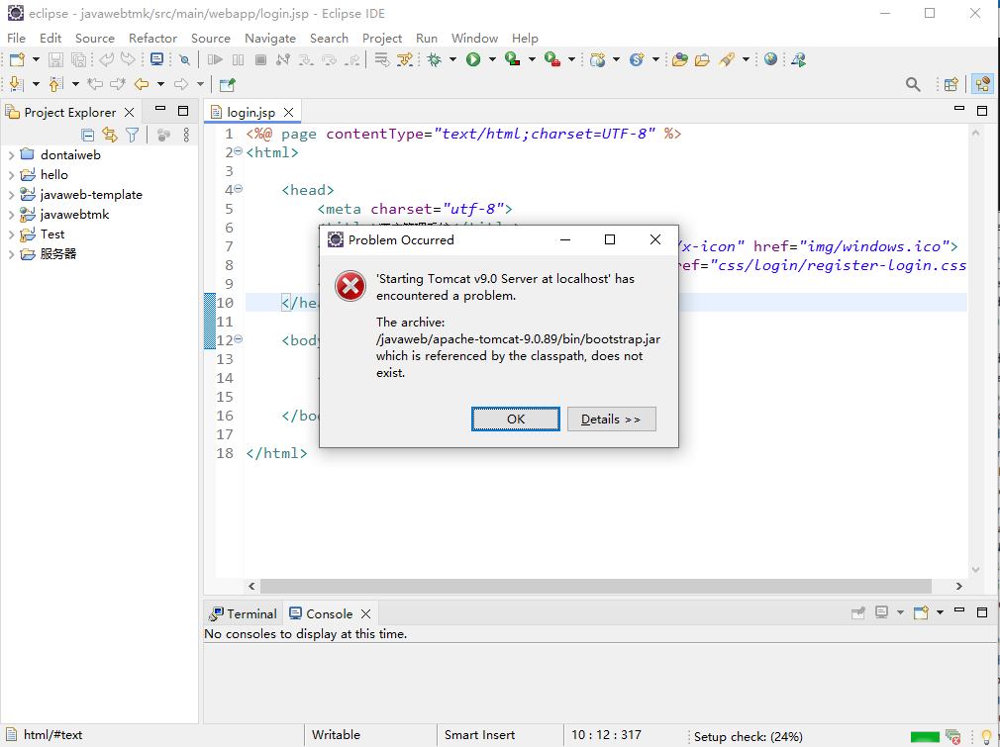
解决方法
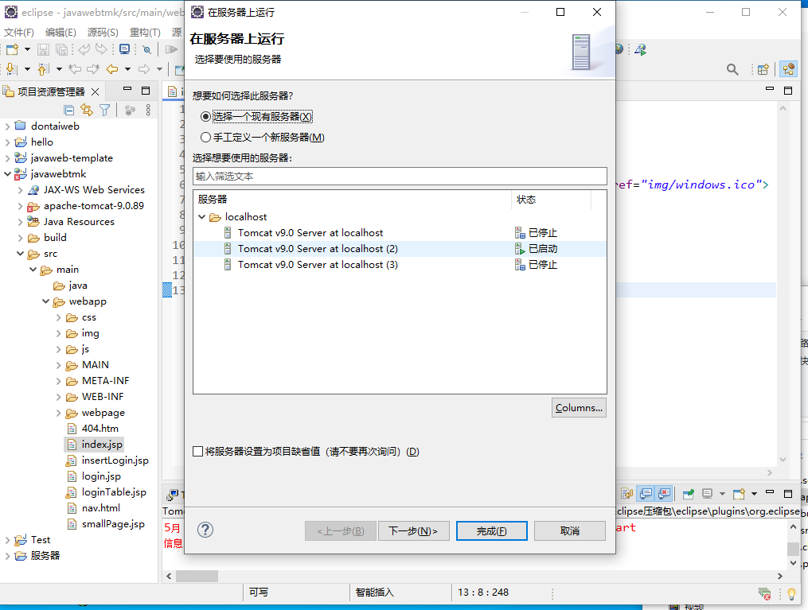

步骤一：将文件apache-tomcat-9.0.89复制到项目根目录下
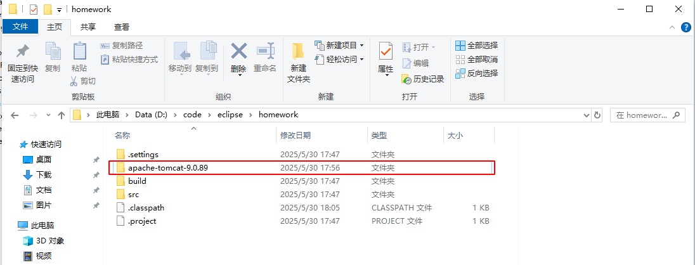
步骤二：打开eclipse.exe → 选中项目homework并鼠标右击 → 单击【Properties】→选择【Java Build Path】→选择【Libraries】→选择【Classpath】→点击【Add Library...】→点击【Server Runtime】→点击【Next】→选中需要的服务器【Apache-Tomcat-9.0】→点击【Finsh】→点击【Apply add Close】→回到首页 →点击运行按钮 →选中【Apache-Tomcat-9.0 Server at localhost】→点击【Finsh】
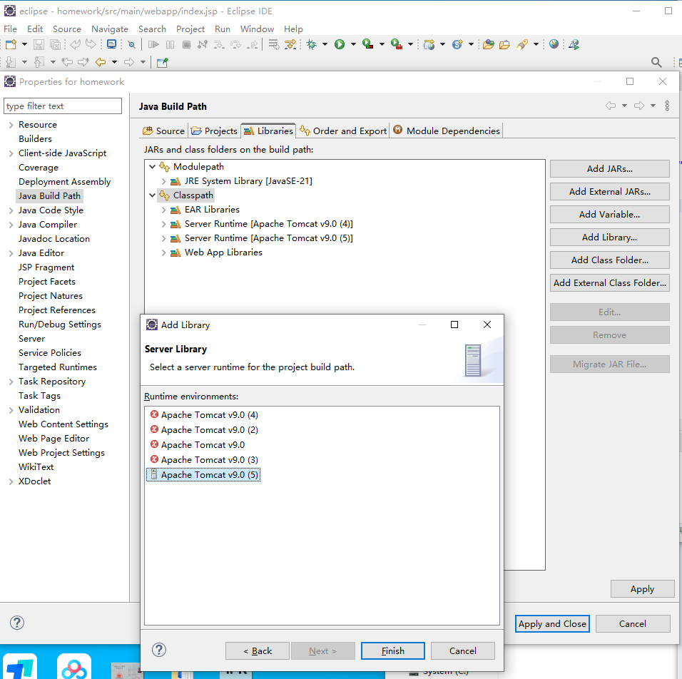
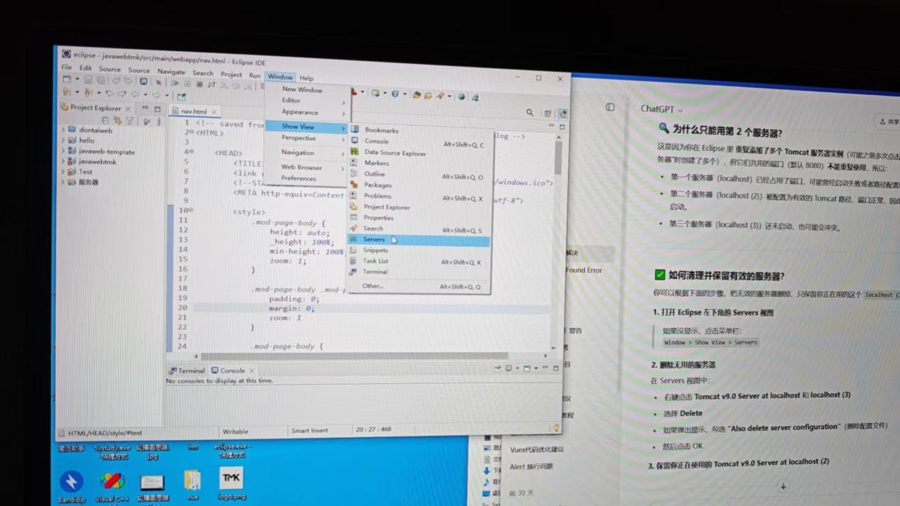
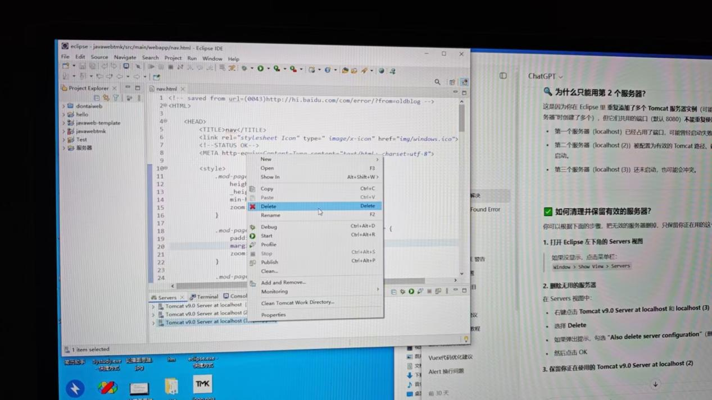
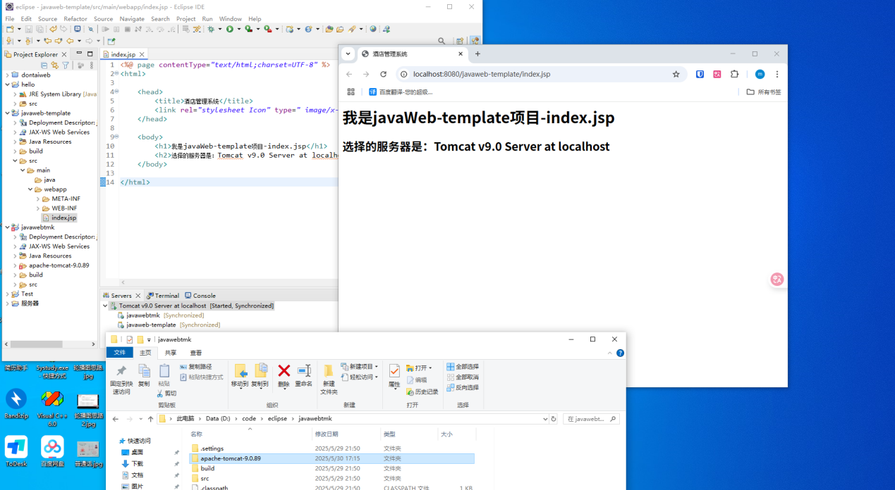
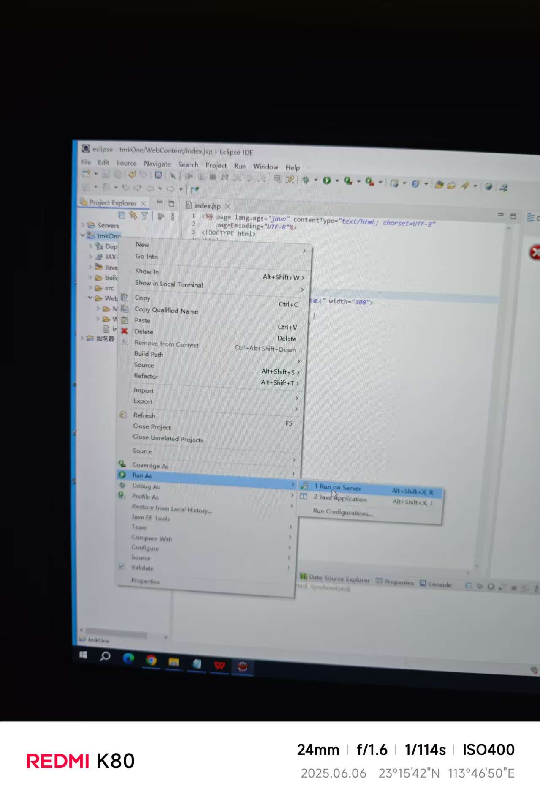
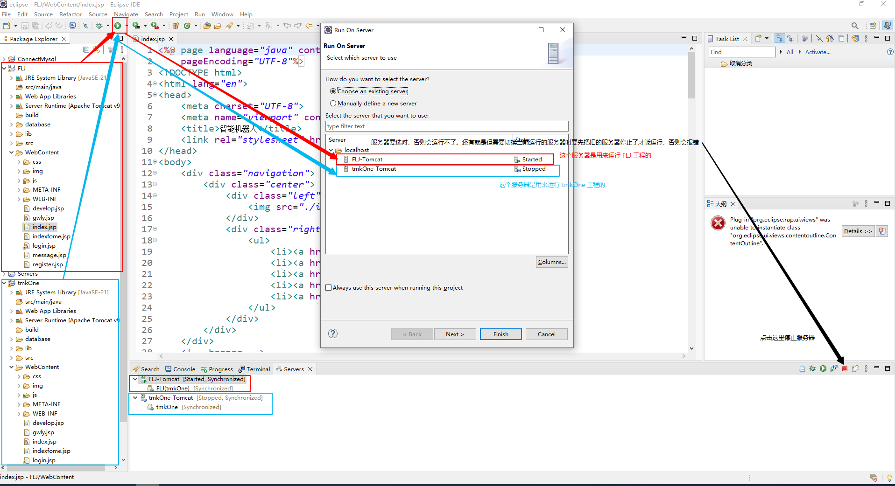